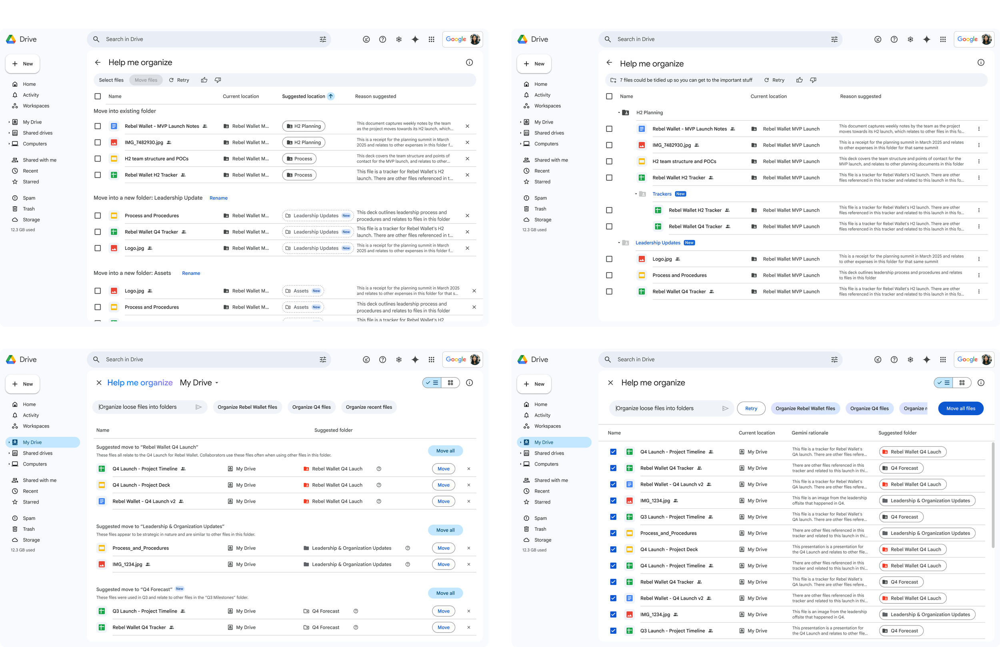

Drive AI File Organizer
In 2025, the strategic vision for Google Drive shifted. We didn't just want to store files; we wanted to transform Drive into an 'Assistive Librarian'—an intelligent agent that proactively helps users find, analyze, and organize their files.
As the Design Lead, I spearheaded the 0-to-1 vision for an intelligent file organizing agent in Google Drive. With 88% of users performing organizing tasks weekly, our goal was to eliminate manual friction and build user confidence through AI-driven suggestions. By focusing on high-impact, low-risk organizing actions, this initiative successfully validated market fit—achieving a 97% usability rating.
- 84% Overall Positive Impression
- 93% Delight
- 97% Usability
- 81% Value
Google Drive's 2025 strategic vision shifted toward becoming an 'Assistive Librarian' through Gemini integration, positioning organizing as a core transformation initiative.
Organizing files is the 3rd most requested area of improvement for commercial Drive users.
Despite weekly organization attempts, the process remains entirely manual and overwhelming.
- Leverage Gemini to help users organize and reliably access Drive content
- Determine market fit for genAI organizing feature
- 51% of all organizational actions involve moving a file from the root to an existing folder
- 65% of parent-to-child moves are into folders created at the exact moment of organization
- AI-driven suggestions for moving files into existing folders
- AI-driven suggestions for moving files into new folders (one level deep)
We had to utilize existing Drive components to increase velocity, focusing on the AI interaction model rather than new UI patterns.
My initial approach focused on exploring four directional options, weighing user context against technical and organizational constraints.

- Above the file list: High visibility but too intrusive
- Dialog: Provided focus but felt cramped
- Gemini side panel: Ideal but blocked by external team ownership
- Dedicated view: Selected — full canvas, rapid iteration, scaling potential
I led a journey mapping exercise to visualize organizing phases and identify key pillars:
- User Flow — Path mapping for successful organization requests
- User Needs — Required information for confidence in AI suggestions

Unfortunately, due to timeline constraint, we had to take phase 2 out of the process.
We moved forward with a variation of option 3

We ran an end-to-end usability study and tasks were successfully completed.
- Participants recognized Gemini/AI as suggestion source
- All users understood files were organized into existing and newly created folders
- All understood acceptance interaction model
- Renaming suggested folders found intuitive
- Changing file locations overall found intuitive
The early launch results have been overwhelmingly positive, proving that users are ready for AI-assisted file organizing.
- 84% Overall Positive Impression
- 93% Delight
- 97% Usability
- 81% Value